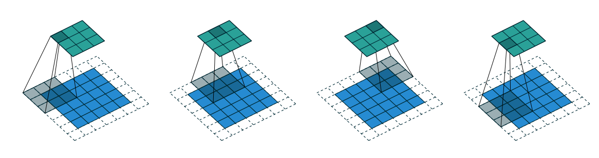
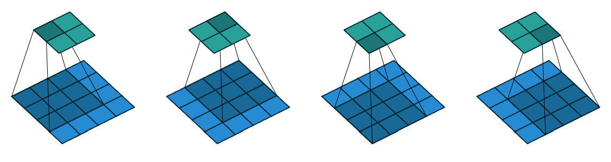

Convolution Arithmetic in Deep Learning Part 2
14 May 2016Table of Contents:
Recap from Part 1
In Part 1, we reviewed the convolution operation and understood how output of convolution is affected by the choice of parameters such as kernel size, strides, and padding. We saw the effect of strides and padding on output of the convolution individually and together.
At last we came up with a general formula for output of the convolution and its dependency on these parameters. Please remember the below relationship
Relationship: For any \(i\), \(k\), \(s\), and \(p\) $$o = \lfloor \dfrac{i + 2p - k}{s} \rfloor + 1$$ where \( i \) : input size, \( k \) : kernel size, \( s \) : stride, \( p \) : zero padding, \(\lfloor \rfloor\): floor operation, \(o\) : output size
|  |
- Figure 2.1 provides an example for \(i = 5\), \(k = 3\), \(s = 2\) and \(p = 1\), therefore output size \(o = \lfloor \dfrac{5 + 2*1 - 3}{2} \rfloor + 1 = 5\).
Now that we know how these parameters play a role in convolution, let us understand the same in pooling and deconvolution arithmetic
Pooling
Pooling operation provide invariance to small translations of the input (think in terms of image). Different kinds of pooling functions are known namely max-pooling and average pooling. Pooling does not involves zero padding in neural network. So, we can rewrite the formula described in the above section by eliminating the padding term \(p\) as G $$o = \lfloor \dfrac{i - k}{s} \rfloor + 1$$
This relationship holds good for any kind of pooling
Deconvolution
Deconvolution is nothing but transpose of convolution. It is also called as Transposed Convolution.
|  |
Lets take an example of convolution represented in Figure 2.2 to understand what I meant. If we unroll the input and output into vectors from left to right and top to bottom, we can represent the output by the multiplication of input with sparse matrix \(C\), where the non-zero elements are the elements \(w_{i, j}\) of the kernel (\(i\) : row and \(j\) : column). This is showin in Figure 2.3
- As shown in the figure, matrix multiplication form takes the input matrix flattened as a \(16\)-dimensional vector and produces a \(4\)-dimensional vector. Therefore convolution maps the input vector from \(16\)-dimensional space to \(4\)-dimensional space.
- In order to map back the \(4\)-dimensional space to \(16\)-dimensional space, we multiply the output with \(C^T\). Hence the name Transposed Convolution for
Deconvolution. This is shown in Figure 2.4.
Figure 2.4: Transposed Convolution
Deconvolution Arithmetic
In order to analyse deconvolution layer properties, we use the same simplified settings we used for convolution layer.
No Zero Padding, Unit Strides, Transposed
- The example in Figure 2.2 shows convolution of \(3\) x \(3\) kernel on a \(4\) x \(4\) input with
unitary stride and no padding (i.e., \(i = 4, k = 3, s = 1, p = 0\)). This produces output of size \(2\) x \(2\).
- The transpose of this convolution is to obtain output of shape \(4\) x \(4\) when applied on a \(2\) x \(2\) input.
This can be achieved by directly convolving \(3\) x \(3\) kernel over \(2\) x \(2\) input padded with a \(2\) x \(2\) border of zeros
(i.e., \(i'= 2, k' = k, s' = s, p' = 2\)). This is shown in Figure 2.5
Figure 2.5: No Zero Padding, Unit Strides
Relationship-7: A convolution described by \(s = 1, p = 0\), and \(k\) has an associated deconvolution described by \(k' = k, s' = s\) and \(p' = k - 1\) and its output size is $$o' = i'+ k - 1$$
Proof: We know that, general form of convolution is defined as $$o = \lfloor \dfrac{i + 2p - k}{s} \rfloor + 1$$ subsituting for \(s = 1, p = 0\), convolution is defined as $$o = i - k + 1$$ But, we need \(o = i', i = o'\), therefore $$i' = o' - k + 1$$ $$\implies o' = i' + k - 1$$
Zero Padding, Unit Strides, Transposed
The transpose of zero padded convolution is equivalent to convolving an input padded with less zeros
Relationship-8: A convolution described by \(s = 1, k\), and \(p\) has an associated deconvolution described by \(k' = k, s' = s\) and \(p' = k - p - 1\) and its output size is $$o' = i'+ (k - 1) - 2p$$
This is illustrated in Figure 2.6, for \(i = 5, k = 4\) and \(p = 2\)
Half Padding, Transposed
Applying the same reasoning as before, transpose of half padded convolution is itself a half padded convolution.
Relationship-9: A convolution described by \(k = 2n + 1\), \(n \in N\) and \(s = 1\) and \(p = \lfloor \dfrac{k}{2} \rfloor = n\) has an associated transposed convolution described by \(k' = k, s' = s, p' = p\) and its output size is $$o' = i'+ (k - 1) - 2p$$ $$o' = i'+ 2n - 2n $$ $$o' = i'$$
This is illustrated in Figure 2.7, for \(i = 5, k = 3\) and therefore \(p = 1\)
Full Padding, Transposed
The equivalent of fully padded convolution is a non-padded convolution
Relationship-10: A convolution described by \(s = 1, k\) and \(p = k - 1\) has an associated transposed convolution described by \(k' = k, s' = s, p' = 0\) and its output size is $$o' = i'+ (k - 1) - 2p$$ $$o' = i'- (k - 1) $$
This is illustrated in Figure 2.8, for \(i = 5, k = 3\) and therefore \(p = 2\)
No Zero Padding, Non-Unit Strides, Transposed
Using the same kind of reasoning as before, we might expect that the transpose of a convolution with \(s > 1\) involves equivalent convolution with \(s < 1\). This is a valid intution and which is why transposed convolutions are also called as fractionally strided convolutions
Relationship-11: A convolution described by \(p = 0, k\) and \(s\) and whose input size is such that \(i - k\) is a multiple of \(s\), has an associated transposed convolution described by \(\tilde{i}'\), \(k' = k\), \(s' = 1\) and \(p' = k - 1\), where \(\tilde{i}'\) is the size of the stretched input obtained by adding \(s - 1\) zeros between each input unit, and its output size
$$o' = s (i' - 1) + k$$
This is illustrated in Figure 2.9, for \(i = 5, k = 3\) and \(s = 2\)
Zero Padding, Non-Unit Strides, Transposed
Relationship-12: A convolution described by \(k\), \(s\) and \(p\) and whose input size \(i\) is such that \(i + 2p - k\) is a multiple of \(s\) has an associated transposed convolution described by \(\tilde{i}'\), \(k' = k\), \(s' = 1\) and \(p' = k - p - 1\), where \(\tilde{i}'\) is the size of the stretched input obtained by adding \(s - 1\) zeros between each input unit, and its output size is
$$o' = s (i' - 1) + k - 2p$$ This is illustrated in Figure 2.10, for \(i = 5, k = 3, s = 2\) and \(p = 1\)
The constraint on the size of the input can be removed by introducing a new parameter \(a \in {0, \ldots, s - 1}\)
Relationship-13: A convolution described by \(k\), \(s\) and \(p\) has an associated transposed convolution described by \(a\), \(\tilde{i}'\), \(k' = k\), \(s' = 1\) and \(p' = k - p - 1\), where \(\tilde{i}'\) is the size of the stretched input obtained by adding \(s - 1\) zeros between each input unit, and \(a = (i + 2p - k) \mod s\) represents the number of zeros added to the top and right edges of the input, and its output size is
$$o' = s (i' - 1) + a + k - 2p$$ This is illustrated in Figure 2.11, for \(i = 6, k = 3, s = 2\) and \(p = 1\)
Take Away
Formula for Convolution:
$$o = \lfloor \dfrac{i + 2p - k}{s} \rfloor + 1$$
Formula for Deconvolution:
$$o' = s (i' - 1) + a + k - 2p$$
where \( i \) : input size before convolution, \( k \) : kernel size, \( s \) : stride, \( p \) : zero padding, \(\lfloor \rfloor\): floor operation, \(o\) : output size after convolution, \( i' \) : input size before deconvolution \(o'\) : output size after deconvolution, \(a \in {0, \ldots, s - 1}\)